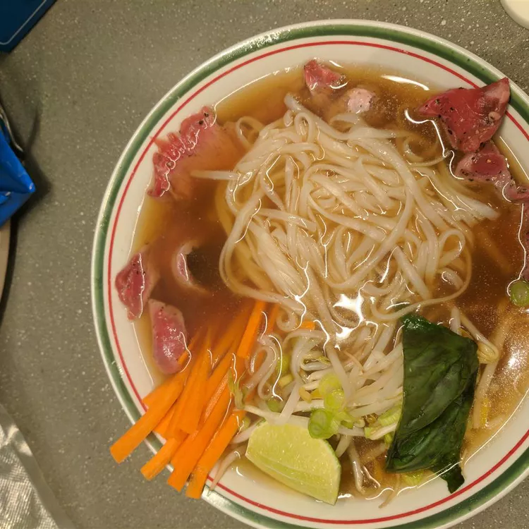

Vietnamese Beef Pho
This pho lemongrass soup is served with a plate full of fresh garnishes and carious sauces - this allows each person to season their serving to taste.
The soup is somewhat unusual because the meat is cooked in the serving bowl.
The beef is sliced very thin, almost thin enough to see through;
you might want to have the butcher slice it.
The boiling hot broth is pored over the noodles and raw meat.
The meat is quickly cooked in the hot broth while you garnish the soup.

Summary
- Prep time: 10 mins
- Cook time: 1 hrs 20 mins
- Total time: 1 hrs 30 mins
- Servings: 6
Ingredients
- 4 quarts beef broth
- 1 large onion, sliced into rings
- 6 slices fresh ginger root
- 1 lemon grass
- 1 cinnamon stick
- 1 teaspoon whole black peppercorns
- 1 pound sirloin tip, cut into thin slices
- 0.5 pound bean sprouts
- 1 cup fresh basil leaves
- 1 cup fresh mint leaves
- 1 cup loosely packed cilantro leaves
- 3 fresh jalapeno peppers, sliced into rings
- 2 limes, cut into wedges
- 2 (8 ounce) packages dried rice noodles
- 0.5 tablespoon hoisin sauce
- 1 dash hot pepper sauce
- 3 tablespoons fish sauce
Steps
- Combine broth, onion, ginger, lemongrass, cinnamon, and peppercorns in a large pot. Bring to a boil, reduce heat, and cover. Simmer for 1 hour.
- Arrange bean sprouts, basil, mint, and cilantro on a platter with peppers and limes.
- Soak noodles in hot water to cover until soft, about 15 minutes. Drain.
- Place equal portions of noodles into 6 large soup bowls; place raw beef on top. Ladle hot broth over noodles and beef. Serve alongside hoisin, hot pepper, and fish sauces; pass platter with garnishes.